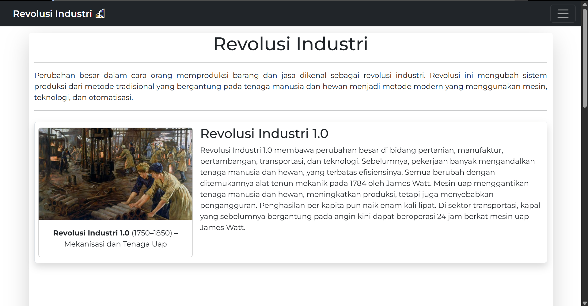

ATS
Proyek ini bertujuan untuk menganalisis dan membandingkan nilai siswa berdasarkan berbagai parameter, seperti mata pelajaran, rata-rata kelas, dan tren peningkatan atau penurunan nilai. Data yang digunakan dapat berupa hasil ujian, tugas, atau aspek lain yang relevan untuk memberikan gambaran yang lebih akurat tentang perkembangan akademik siswa.

REVOLUSI INDUSTRI
Artikel ini membahas tentang Revolusi Industri, mulai dari sejarah, dampaknya terhadap ekonomi dan sosial, hingga peran teknologi dalam transformasi industri. Artikel ini juga mengeksplorasi Revolusi Industri 4.0 dan bagaimana otomatisasi serta kecerdasan buatan mengubah cara manusia bekerja.